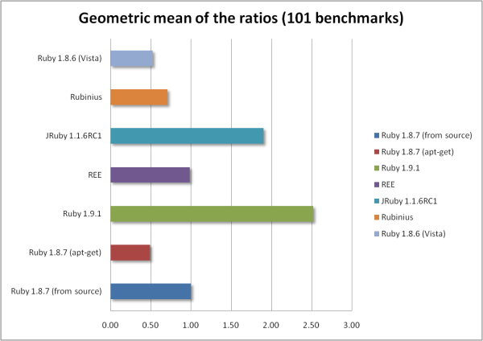
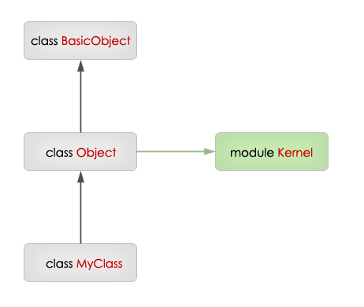

Ruby (on Rails) developer w

mul2_first = lambda {|x| x * 2 } mul2_second = ->(x) { x * 2 } # można także ominąć () ale w ten sposób raczej pogarszamy czytelność mul2_third = -> x { x * 2 }
l = ->(a, b = 100, *c, &d) do p [a, b, c, d.()] end l.(1, 2, 3, 4) { 5 }
[1, 2, [3, 4], 5]
l = lambda do |a, b = 100, *c, &d| p [a, b, c, d.()] end l.call(1, 2, 3, 4) { 5 }
[1, 2, [3, 4], 5]
arr1 = %w(foo bar baz) arr2 = [1, 2, 3] [*arr1, "a", *arr2] #=> ["foo", "bar", "baz", "a", 1, 2, 3]
i = "hello" 3.times {|i| puts i } puts i
h = {} [1, 2, 3].each_with_index do |@a, h["a"]| p [@a, h["a"]] end
def foo(a, b = 10, *rest, c) p [a, b, rest, c] end class MyArray < Array def []=(*args, value) p [args, value] end end arr = MyArray.new arr[1, 2, 3] = "foo" arr[100] = "bar"
def foo(a, (b, c, *d)) p [a, b, c, d] end foo(1, 2) # a = 1, b = 2, c = nil, d = [] foo(1, []) # a = 1, b = nil, c = nil, d = [] foo(1, [2, 3]) # a = 1, b = 2, c = 3, d = [] foo(1, [2, 3, 4]) # a = 1, b = 2, c = 3, d = [4]
# stary sposób {:a => 1, :b => 2} # nowy sposób {a: 1, b: 2}
User.find(:all, :order => "login", :limit => 5) User.find(:all, order: "login", limit: 5)

a = [5, 3, 1, 1, 4, 8, 7] a.take(2) #=> [5, 3] a.take_while {|e| e != 1 } a.group_by {|e| e % 2 } #=> {1=>[5, 3, 1, 1, 7], 0=>[4, 8]} a.minmax #=> [1, 8] a.count {|e| e < 6 } #=> 6
numbers = [10, 100, 123] pairs = { "one" => "foo", "two" => "bar", "three" => "baz" } e1 = numbers.each e2 = pairs.each loop do p [e1.next, e2.next] end
file = File.open(__FILE__) file.each_line.with_index do |line, i| puts "#{i}: #{line}" end
fib = Enumerator.new do |y| a = b = 1 loop do y << a a, b = b, a + b end end p fib.take(10) #=> [1, 1, 2, 3, 5, 8, 13, 21, 34, 55]
# encoding: utf-8 puts "ąęć".reverse #=> "ćęą" puts "ąęć".size #=> 3 puts "ąęć".bytesize #=> 6 puts "ąęć"[0] #=> "ą"
# encoding: utf-8 s = "Hello World!" puts s.encoding.class puts s.encoding.name
Encoding UTF-8
# encoding: utf-8 puts "Ten plik został zakodowany przy użyciu kodowania: #{__ENCODING__.name}"
Ten plik został zakodowany przy użyciu kodowania: UTF-8
# encoding: utf-8 str = "ąęć" puts str.encoding p str.bytes.to_a str_iso = str.encode("iso-8859-2") puts str_iso.encoding p str_iso.bytes.to_a
UTF-8 [196, 133, 196, 153, 196, 135] ISO-8859-2 [177, 234, 230]
data = File.read( "/etc/passwd", external_encoding: "ascii", internal_encoding: "utf-8" ) puts data.encoding
UTF-8
h = {}; h["c"] = 3; h["a"] = 1; h["b"] = 2 h.each do |k, v| p [k, v] end
["a", 1] ["b", 2] ["c", 3]
["c", 3] ["a", 1] ["b", 2]
text = "Yukihiro Matsuomoto" m = text.match(/(?<first_name>\w+)\s+(?<last_name>\w+)/) puts m["first_name"] #=> "Yukihiro" puts m["last_name"] #=> "Matsumoto"
/(?<foo>.*)/ =~ "bar" puts foo
a = ["1", "2", "3", "4"] puts a.map(&:to_i).inject(:+)
["foo", "bar", "baz"].sort.grep(/foo/).tap {|o| p o }.map(&:size)
require "prime" puts 600851475143.prime_division.max.first
require "prime" puts (2..1000).select(&:prime?) puts (2..1000).count(&:prime?)
$ cat hello_world.rb puts "Hello World!"
$ ruby-trunk -v ruby 1.9.2dev (2009-10-17 trunk 25387) [x86_64-linux]
Hello World!
$ cat hello_world.py print "Hello World!"
$ python3 --version Python 3.0.1+
File "/home/radarek/blog/prezentacja/code/hello_world.py", line 1
print "Hello World!"
^
SyntaxError: invalid syntax